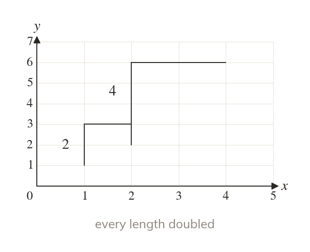

Size changes, shape does not
An enlargement multiplies every length by the scale factor. So the image is similar to the object. Its angles do not change.
An enlargement multiplies every length by the scale factor, so the image is similar to the object. Its angles do not change.